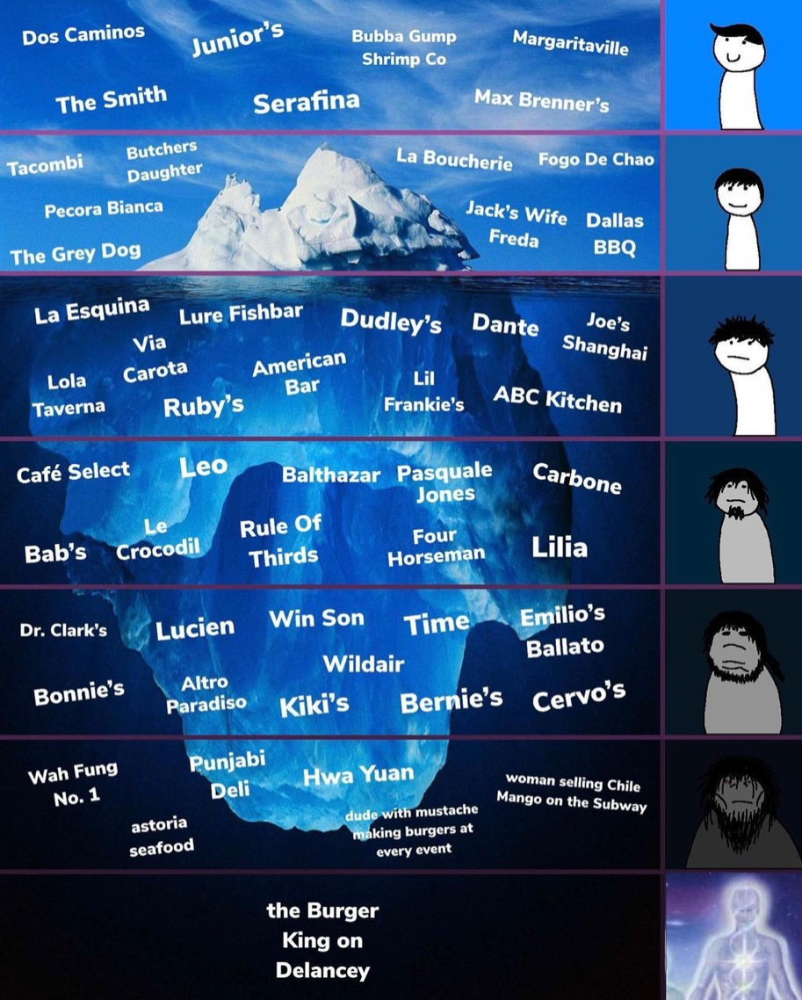

<!DOCTYPE html>
<!--[if lt IE 7]>      <html class="no-js lt-ie9 lt-ie8 lt-ie7"> <![endif]-->
<!--[if IE 7]>         <html class="no-js lt-ie9 lt-ie8"> <![endif]-->
<!--[if IE 8]>         <html class="no-js lt-ie9"> <![endif]-->
<!--[if gt IE 8]><!--> <html class="no-js"> <!--<![endif]-->
    <head>
        <meta charset="utf-8">
        <meta http-equiv="X-UA-Compatible" content="IE=edge">
        <title>DownBad.nyc</title>
        <meta name="description" content="Web and graphic design.">
        <meta name="viewport" content="width=device-width, initial-scale=1">
        <script src="https://code.jquery.com/jquery-3.4.1.slim.min.js" integrity="sha384-J6qa4849blE2+poT4WnyKhv5vZF5SrPo0iEjwBvKU7imGFAV0wwj1yYfoRSJoZ+n" crossorigin="anonymous"></script>
        <script src="https://cdn.jsdelivr.net/npm/popper.js@1.16.0/dist/umd/popper.min.js" integrity="sha384-Q6E9RHvbIyZFJoft+2mJbHaEWldlvI9IOYy5n3zV9zzTtmI3UksdQRVvoxMfooAo" crossorigin="anonymous"></script>
        <link rel="stylesheet" href="https://stackpath.bootstrapcdn.com/bootstrap/4.4.1/css/bootstrap.min.css" integrity="sha384-Vkoo8x4CGsO3+Hhxv8T/Q5PaXtkKtu6ug5TOeNV6gBiFeWPGFN9MuhOf23Q9Ifjh" crossorigin="anonymous">
        <script src="https://stackpath.bootstrapcdn.com/bootstrap/4.4.1/js/bootstrap.min.js" integrity="sha384-wfSDF2E50Y2D1uUdj0O3uMBJnjuUD4Ih7YwaYd1iqfktj0Uod8GCExl3Og8ifwB6" crossorigin="anonymous"></script>
        <link rel="stylesheet" href="styles.css">

        <script src='https://api.mapbox.com/mapbox-gl-js/v2.9.1/mapbox-gl.js'></script>
        <link href='https://api.mapbox.com/mapbox-gl-js/v2.9.1/mapbox-gl.css' rel='stylesheet' />


        <link href="https://fonts.googleapis.com/css2?family=Archivo:ital,wght@0,400;0,500;0,600;0,700;1,400;1,500;1,600;1,700&family=Crimson+Pro:ital,wght@0,200;0,300;0,400;0,500;0,600;0,700;0,800;0,900;1,200;1,300;1,400;1,500;1,600;1,700;1,800;1,900&family=Muli:ital,wght@0,200;0,300;0,400;0,500;0,600;0,700;0,800;0,900;1,200;1,300;1,400;1,500;1,600;1,700;1,800;1,900&display=swap" rel="stylesheet">
        <!-- Odometr includes -->
        <link rel="stylesheet" href="https://github.hubspot.com/odometer/themes/odometer-theme-default.css" />
        <script src="https://github.hubspot.com/odometer/odometer.js"></script>
    
        <!-- Global site tag (gtag.js) - Google Analytics -->
        <script async src="https://www.googletagmanager.com/gtag/js?id=UA-163683928-1"></script>
        <script>
            window.dataLayer = window.dataLayer || [];
            function gtag(){dataLayer.push(arguments);}
            gtag('js', new Date());

            gtag('config', 'UA-163683928-1');
        </script>

    
        <div class="jumbotron jumbotron-fluid" id="top1">
            <div class="container" style="text-align: center">
                
                
          </div>
        </div>
    
    </head>
    
    
    <body>
        <div class="container-fluid" id="map1">
            <div id='map'></div>
            <script>
            mapboxgl.accessToken = 'pk.eyJ1IjoicHVza2FyZXZpY21hcmtvIiwiYSI6ImNsOGM0ODN2ZzBkaG4zb245MXMyd3o3ZGkifQ.e6UX1du_kGFp5YzHVrnMLw';
            var map = new mapboxgl.Map({
                container: 'map',
                style: 'mapbox://styles/puskarevicmarko/cl1v306x6006a14s2064gtpmd',
                center: [-73.991556,40.714972], // starting position [lng, lat]
                zoom: 13, // starting zoom
            });

            map.on('load', () => {
                    map.addSource('places', {
                    'type': 'geojson',
                    'data': {
                    'type': 'FeatureCollection',
                    'features': [
                    {
                    'type': 'Feature',
                    'properties': {
                    'description':
                    '<strong>Cervos</strong>'
                    },
                    'geometry': {
                    'type': 'Point',
                    'coordinates': [-73.991556,40.714972]
                    }
                    },
                    {
                    'type': 'Feature',
                    'properties': {
                    'description':
                    '<strong>Mad Men Season Five Finale Watch Party</strong><p>Head to Lounge 201 (201 Massachusetts Avenue NE) Sunday for a Mad Men Season Five Finale Watch Party, complete with 60s costume contest, Mad Men trivia, and retro food and drink. 8:00-11:00 p.m. $10 general admission, $20 admission and two hour open bar.</p>'
                    },
                    'geometry': {
                    'type': 'Point',
                    'coordinates': [-77.003168, 38.894651]
                    }
                    },
                    {
                    'type': 'Feature',
                    'properties': {
                    'description':
                    '<strong>Big Backyard Beach Bash and Wine Fest</strong><p>EatBar (2761 Washington Boulevard Arlington VA) is throwing a Big Backyard Beach Bash and Wine Fest on Saturday, serving up conch fritters, fish tacos and crab sliders, and Red Apron hot dogs. 12:00-3:00 p.m. $25.</p>'
                    },
                    'geometry': {
                    'type': 'Point',
                    'coordinates': [-77.090372, 38.881189]
                    }
                    },
                    {
                    'type': 'Feature',
                    'properties': {
                    'description':
                    '<strong>Ballston Arts & Crafts Market</strong><p>The Ballston Arts & Crafts Market sets up shop next to the Ballston metro this Saturday for the first of five dates this summer. Nearly 35 artists and crafters will be on hand selling their wares. 10:00-4:00 p.m.</p>'
                    },
                    'geometry': {
                    'type': 'Point',
                    'coordinates': [-77.111561, 38.882342]
                    }
                    },
                    {
                    'type': 'Feature',
                    'properties': {
                    'description':
                    "<strong>Seersucker Bike Ride and Social</strong><p>Feeling dandy? Get fancy, grab your bike, and take part in this year's Seersucker Social bike ride from Dandies and Quaintrelles. After the ride enjoy a lawn party at Hillwood with jazz, cocktails, paper hat-making, and more. 11:00-7:00 p.m.</p>"
                    },
                    'geometry': {
                    'type': 'Point',
                    'coordinates': [-77.052477, 38.943951]
                    }
                    },
                    {
                    'type': 'Feature',
                    'properties': {
                    'description':
                    '<strong>Capital Pride Parade</strong><p>The annual Capital Pride Parade makes its way through Dupont this Saturday. 4:30 p.m. Free.</p>'
                    },
                    'geometry': {
                    'type': 'Point',
                    'coordinates': [-77.043444, 38.909664]
                    }
                    },
                    {
                    'type': 'Feature',
                    'properties': {
                    'description':
                    '<strong>Muhsinah</strong><p>Jazz-influenced hip hop artist Muhsinah plays the Black Cat (1811 14th Street NW) tonight with Exit Clov and Gods’illa. 9:00 p.m. $12.</p>'
                    },
                    'geometry': {
                    'type': 'Point',
                    'coordinates': [-77.031706, 38.914581]
                    }
                    },
                    {
                    'type': 'Feature',
                    'properties': {
                    'description':
                    "<strong>A Little Night Music</strong><p>The Arlington Players' production of Stephen Sondheim's <em>A Little Night Music</em> comes to the Kogod Cradle at The Mead Center for American Theater (1101 6th Street SW) this weekend and next. 8:00 p.m.</p>"
                    },
                    'geometry': {
                    'type': 'Point',
                    'coordinates': [-77.020945, 38.878241]
                    }
                    },
                    {
                    'type': 'Feature',
                    'properties': {
                    'description':
                    '<strong>Truckeroo</strong><p>Truckeroo brings dozens of food trucks, live music, and games to half and M Street SE (across from Navy Yard Metro Station) today from 11:00 a.m. to 11:00 p.m.</p>'
                    },
                    'geometry': {
                    'type': 'Point',
                    'coordinates': [-77.007481, 38.876516]
                    }
                    }
                    ]
                    }
                    });
                    // Add a layer showing the places.
                    map.addLayer({
                    'id': 'places',
                    'type': 'circle',
                    'source': 'places',
                    'paint': {
                    'circle-color': '#4264fb',
                    'circle-radius': 6,
                    'circle-stroke-width': 2,
                    'circle-stroke-color': '#ffffff'
                    }
                    });
                    
                    // Create a popup, but don't add it to the map yet.
                    const popup = new mapboxgl.Popup({
                    closeButton: false,
                    closeOnClick: false
                    });
                    
                    map.on('mouseenter', 'places', (e) => {
                    // Change the cursor style as a UI indicator.
                    map.getCanvas().style.cursor = 'pointer';
                    
                    // Copy coordinates array.
                    const coordinates = e.features[0].geometry.coordinates.slice();
                    const description = e.features[0].properties.description;
                    
                    // Ensure that if the map is zoomed out such that multiple
                    // copies of the feature are visible, the popup appears
                    // over the copy being pointed to.
                    while (Math.abs(e.lngLat.lng - coordinates[0]) > 180) {
                    coordinates[0] += e.lngLat.lng > coordinates[0] ? 360 : -360;
                    }
                    
                    // Populate the popup and set its coordinates
                    // based on the feature found.
                    popup.setLngLat(coordinates).setHTML(description).addTo(map);
                    });
                    
                    map.on('mouseleave', 'places', () => {
                    map.getCanvas().style.cursor = '';
                    popup.remove();
                    });
                    });
            </script>
    </div>
    
        <script src="https://cdnjs.cloudflare.com/ajax/libs/Chart.js/2.9.3/Chart.min.js"></script>
        <script src="main.js"></script>
    </body>
</html>
